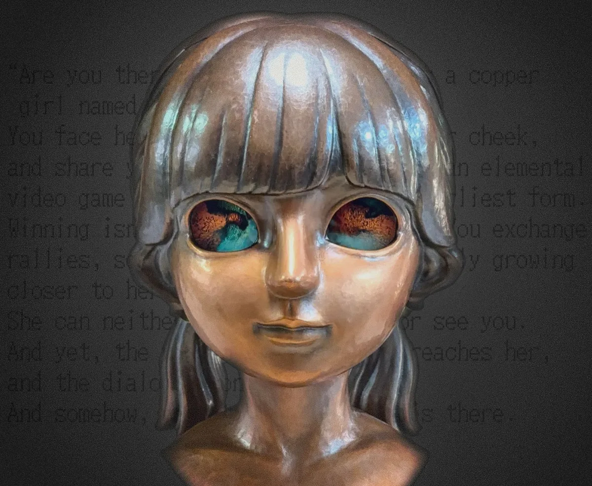

PRJ CÔGEIMU 02 Kagane
How to play
ARE YOU THERE? の遊び方ARE YOU THERE?
カガネの正面に座り、
瞳を覗き込みながら遊ぶ。
頬に触れると、ゲームが動きだす。
Sit in front of Kagane and look into her eyes. Touch her cheeks, and the game comes alive.
1回のプレイは3〜5分ほどAbout 3–5 minutes per play
-
正面に座り、瞳を覗き込むSit down and look into her eyes
カガネの正面に座り、空洞になった瞳の奥を覗き込む。ゲームは、その瞳の奥で始まる。Sit facing Kagane and look deep into her hollow eyes. The game begins behind them.
-
左右どちらかの頬に長く触れて、言語を選択するHold one of her cheeks to choose her language
ゲームのはじめに、どちらの頬に長く触れるかで、カガネの声が日本語か英語かが決まる。At the start of the game, the cheek you hold decides whether Kagane speaks Japanese or English.
“左”の頬に長く触れるHold the cheek on your “left” English英語英語“右”の頬に長く触れるHold the cheek on your “right” 日本語Japanese -
両頬に数秒触れて、ゲームを始めるHold both cheeks for a few seconds to start
言語を選んだら、両方の頬に数秒間、手を添えたままにする。それが合図になって、ゲームが始まる。Once you have chosen her language, keep your hands on both cheeks for a few seconds. That is the signal, and the game begins.
-
頬に触れて、ラリーを交わすTouch her cheeks and rally
ゲームが始まったら、頬に触れた手の体温で自分のパドルが動く。右の頬を温めると右へ、左の頬を温めると左へ。ボールを打ち返して、カガネとラリーを交わす。Once the game begins, the warmth of your hands on her cheeks moves your paddle. Warm the cheek on your right to move right, the one on your left to move left. Hit the ball back and trade rallies with Kagane.
うまく動かないときはIf your paddle won’t move
- 手が冷たいときは、手をこすり合わせて温めてから触れる。If your hands are cold, rub them together to warm them before you touch her.
- 反応がないときは、触れる位置や手の当て方を少し変えてみる。If nothing happens, try shifting where or how you hold her cheeks.
- 前の人の手の温もりが頬に残っていると、反応しにくいことがある。そんなときは、頬をあおいで涼しくしてあげる。金属の像ならではの遊び方だ。If the last player’s warmth still lingers in her cheeks, they may not respond. Fan her cheeks to cool them down: a way of playing that only a metal sculpture allows.
-
ラリーが続くほど、カガネは楽しくなるThe longer the rally, the more fun she has
ラリーが続くほど、カガネはどんどん楽しくなっていく。ときには、いたずらを仕掛けてくるかもしれない。The longer the rally lasts, the more fun Kagane has. Now and then, she may play a prank or two on you.
遊ぶときのお願いA few requests
- この作品は、触れて遊べる作品です。頬にはやさしく手を添え、強く押したり、叩いたりしないでください。This is an artwork you are meant to touch. Rest your hands gently on her cheeks; please don’t press hard or tap.
- 遊べるのは1人ずつです。遊び終えたら、次の人に席をお譲りください。One player at a time. When you finish, please give your seat to the next person.
- 困ったときは、近くの会場スタッフにお声がけください。If anything goes wrong, please ask the venue staff.
撮影と SNS への投稿Photos and social media
会場で撮影が禁止されていなければ、本作は撮影も SNS への投稿も自由です。ほかの作品が写り込まないようご注意のうえ、ハッシュタグをつけてシェアしていただけるとうれしいです。Unless the venue prohibits photography, you are free to photograph this work and share it online. Please keep other works out of the frame, and add the hashtags when you share.
#CÔGEIMU #Kagane